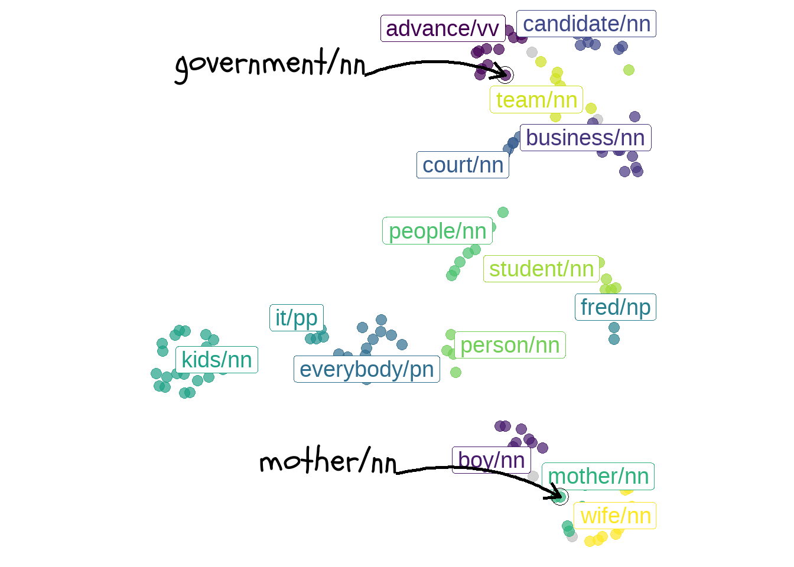
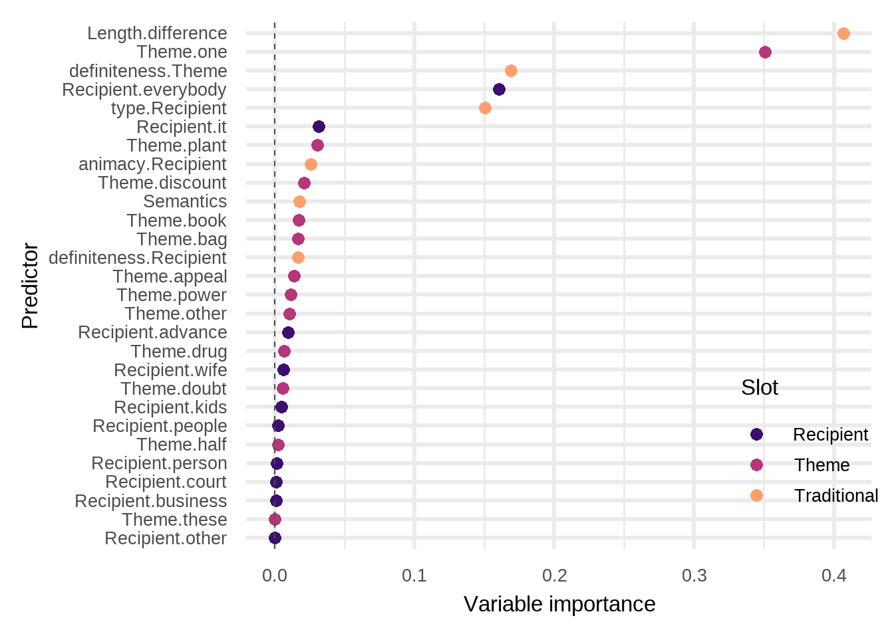
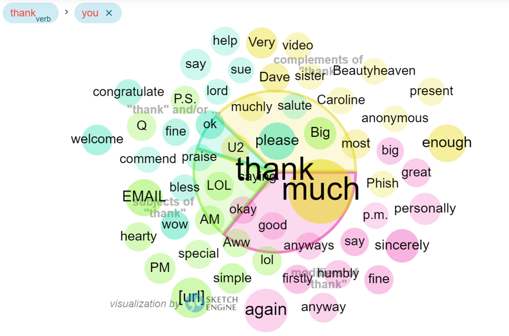

Annotation goes distributional:
Modeling semantic predictors of the dative alternation using vector space models
Outline
- Introduction: the dative alternation
- From vectors to predictors
- Forests and clouds
- Insights and further research
In this talk, I would like to introduce you to the first case study of my PhD research project called “How much does meaning matter? A fresh look at grammatical alternations”. The goal of this research is to examine if and how the way people choose between different ways of saying the same thing (i.e., grammatical alternations) depends on the meaning of the words in the utterance. I will start by introduce you to the dative alternation, our case study, and how lexical semantics is traditionally modeled in variationist linguistics. Then, I will illustrate our proposal, namely automatically-generated semantic predictors using DS techniques, and finally I will discuss the analyses and the results obtained from our first case study using type-level distributional semantic predictors.
Introduction: the dative alternation
The dative alternation
- a) Ditransitive dative variant
[The waiter]subject [gave]verb [my cousin]recipient [some pizza]theme
- b) Prepositional dative variant
[The waiter]subject [gave]verb [some pizza]theme [to my cousin]recipient
Let’s dive into our case study. The DA is one of the most investigated cases of grammatical alternation - where we define a GA as “two or more constructions, called variants, with a highly similar meaning. An A represents choice point for the individual speaker”.
In English, there are two ways, two variants to encode the dative relation: the ditransitive dative construction (recipient-theme order), and the prepositional dative construction (theme-recipient order).
Modelling grammatical alternations
In previous literature, focus on three kinds of predictors:
Formal predictors: e.g., structural complexity of constituents (e.g., presence of heavy postmodification), pronominality, and constituent length (in words, syllables, or similar)
Information status‐related predictors: e.g., givenness
Semantic, coarse-grained, higher-level predictors: e.g., animacy (i.e., annotate for a binary distinction between animate and inanimate recipients – see Bresnan et al. 2007)
To explore the correlation of choices between the two variants are both implemented language-internal predictors as well as language-external predictors (such as sex, race/ethnicity, etc). Regarding the internal predictors, the traditional variationist approach is fairly good at manually annotating for formal predictors, such as in (1) and (2) for the dative alternation, but when it comes to the third point, namely the semantic predictors, the VA would annotate only for few semantic factors such as animacy. This is because (next slide)
Role of semantic predictors in alternation predictions
Annotating for semantics is labor‐intensive and challenging to perform objectively.
- What role do semantic characteristics play in the choice of one of the two variants? At the current state of the research, we know very little about them.
We assume broad semantic equivalence of dative variants, but we are interested in extent to which semantics of materials in argument slots predicts choice.
Annotating for semantics is labor‐intensive and time-consuming, and it’s challenging to perform objectively and systematically. So if we ask ourselves: What role do semantic characteristics play in the choice of one of the two variants? We do not have a clear answer because we are missing those data. And this is the research gap we want to cover.
In particular, we are interested how much the semantic characteristics of the lexical material in the slots of the dative variants predict the choice.
From vectors to predictors
Automatically-generated semantic predictors
Our suggestion: automatically-generated, corpus-based semantic predictors using distributional semantic models (DSMs).
New inputs from DMSs: more data, less annotation
Distributional semantics is an usage-based model of meaning, based on the assumption that items that occur in similar contexts in a given corpus will be semantically similar, while those that occur in different contexts will be semantically different.
(after reading the slides) DSMs can help us understanding and bring to the light the semantic characteristics of the lexical context in which those variants are embedded. In a nutshell, DS is a usage-based model of meaning, based on the assumption that items that occur in similar contexts in a given corpus will be semantically similar, while those that occur in different contexts will be semantically different. To do that, we operationalize the differences in the distribution of two (or more) items by extracting their co-occurrences from corpora: those differences can tell us something about the semantic relatedness of items.
Examples: recipient type-lemmas
- DAT-4100
- [if I]subject [gave]verb [it]theme [to the government]recipient they would just waste it.
- DAT-4067
- [The judge]subject [will usually, uh, give]verb [custody]theme [to the mother]recipient ninety-seven percent of the time.
But, what does it mean annotating predictors with DS? What we are going to distributionally model are the recipient and the theme of the alternation. (read the examples).
Matrix of recipients
daughter/nn |
europe/np |
it/pp |
dad/nn |
troop/nn |
|
|---|---|---|---|---|---|
government/nn |
-1.23 | 3.23 | 0.21 | 0.0 | 2.59 |
mother/nn |
4.36 | 0.0 | 1.65 | 2.89 | 0.0 |
advance/nn |
-2.32 | 2.09 | 0.0 | -0.59 | 3.67 |
- Dative alternation dataset from Szmrecsanyi et al. (2017), which covers N = 1,190 dative observations in contemporary spoken American English (Switchboard corpus)
- Corpus for building DMSs: Corpus of Contemporary American English (COCA), spoken register (ca. 127 million tokens)
In this first part of the study, we implemented what we call a type-level model.
Let’s consider only the group of recipients, here exemplified by government/nn and mother/nn. As you can see in this co-occurence matrix, each row represents a target-words from the recipient slot: the aggregation of the frequencies between the TW and the CW constitutes a word-type vector. What you see here are raw frequencies transformed, or better, weighted using association strength measures, such as PPMI, that allow the model to bring up to the light the informative semantic relationships between the words.
Building a DS model, means that we train a DS mode, a type-level one in this case, with different parameters and compare them to pick the best one BASED ON CUSTOMARY CRITERIA.
(read about the data set)
Forests and clouds
Clouds of recipients

Building the semantic predictors using DS means identifying the central member of the cluster (called medoid) from the data and grouping the type-word vectors around them based on Euclidean distance metric. We provide the number of clusters the algorithm should create: 3, 8, 15 in our case.
Here, a nice plot of the clusters, or clouds as Mariana Montes says, of the recipients in our best model. (The best model is CS_4_ol_10000_ppmi_10_cosine_k15 (with dimensionality reduction)).
(describe the clusters)
Clouds of themes

From clouds to distributional semantic predictors
Each grouping of recipient/theme lemmas represents what we call distributional (semantic) predictor.
The prediction of the dative variants is based on the membership of the recipient/theme type-lemma in a particular semantic cluster.
To summarize, each grouping of recipient/theme lemmas represents what we call distributional (semantic) predictor. In what follows, we predict dative choices based on the membership of the recipients/themes in a particular semantic cluster by using two of the most classic variationist statistical tools of analysis, Conditional Random forest and Regression analysis.
Random forest
Random forest of traditional and distributional predictors

CRF ia a recursive partitioning method based on conditional inference trees: individual trees are ‘grown’, and their predictions are averaged. This statistical method can answer to the research question: which linguistic factors help to predict the use of particular linguistic variants? (explain the forest and show immediately the next slide) - Do not insist too much on the pronominality
Inside the most important clouds
Theme.one:
- one/pn, everything/pn, feel/nn, it/pp, lot/rr, one/nn, poke/nn, something/pn, stuff/nn, tempt/vv, that/dd, them/pp, thing/nn, try/nn, way/nn
Recipient.everybody:
- everybody/pn, anybody/pn, anyone/pn, anything/pn, everyone/pn, her/pp, him/pp, me/nn, me/pp, myself/pp, somebody/pn, stomach/nn, them/pp, us/pp, you/pp
Recipient.it:
- it/pp, that/dd, theory/nn, thing/nn
Another look at the clouds: regression modelling
c-values of regression model with only traditional and traditional+semantic predictors
Chi-square (Χ2) goodness of fit (c-value) = non-parametric measure of how well a statistical model fits a set of observations.
| RM only trad predictors | RM trad+sem predictors | |
|---|---|---|
| C-value for fixed effects | 0.9844213 | 0.9747162 |
| C-value for fixed and random effects | 0.9854791 | 0.993123 |
We also analyzed the distributional predictors using RM, adding them to the traditional, manually annotated, predictors. We are going to have a quick glance at the main results.
We computed the c-value (Concordance index C: goodness of fit) for the two models with fixed and random effects: even if the model with T+S performs better with the mixed effects, the higher c-v of 0.98 by the Tmodel suggests how the traditional p performs better alone, than in combination with the semantic ones.
Insights and further research
Take-home messages
“You shall choose a variant by the company it keeps!”
(semi-cit. Firth 1955)
Overall, there are some distributional semantics clusters that are very predictive of the alternation
Statistical analyses show how traditional predictors outperform distributional semantics predictors in terms of model performances
- based on the c-value
Directions for future research
-
Other alternations:
Clausal complementation alternation in the history of English
Progressive alternation in Italian
-
Experiment with token-level modeling
- see Montes (2021)
Token-level: in-depth analysis of the correlation of the single occurrences of the lemmas with the context
Thoughts? Comments? Suggestions?

chiara.paolini@kuleuven.be
Traditional predictors
Recipient/Theme.type: The annotation distinguishes between the following categories: (1) noun phrase; (2) personal pronoun; (3) demonstrative pronoun; (4) impersonal pronoun.
Recipient/Theme.definiteness: The annotation distinguishes between the following categories: (1) definite; (2) indefinite (3) definite proper noun.
Recipient/Theme.animacy: The annotation distinguishes between the following categories: (1) human and animal; (2) collective; (3) temporal; (4) locative; (5) inanimate.
Length.difference: The log difference between recipient and theme lengths (see Bresnan & Ford 2010).
Semantics (of dative verb): (1) transfer; (2) communication; (3) abstract.
Recipient/Theme.head: Head lexeme of both the theme and the recipient.
Inside the recipients clouds
Recipient.advance: advance/vv, america/np, arm/nn, country/nn, europe/np, government/nn, iranian/nn, nation/nn, nicaragua/np, russia/np, schwartzkopf/np, troop/nn, vietnamese/np
Recipient.wife: actress/nn, wife/nn, artist/nn, boss/nn, brother/nn, daughters/nn, friend/nn, husband/nn, kitty/np, ryan/np, sister/nn, thomases/np, trek/np
-
Recipient.kids: agencies/nn
2
0.3443036000
kids/nn
16
boys/nn
2
0.5979984000
kids/nn
20
businesses/nn
2
0.4080819000
kids/nn
29
companies/nn
2
0.5218712000
kids/nn
33
countries/nn
2
0.5652321000
kids/nn
37
criminals/nn
2
0.3794335700
kids/nn
42
dogs/nn
2
0.5007423000
kids/nn
43
employees/nn
2
0.4876230700
kids/nn
56
friends/nn
2
0.4518532500
kids/nn
60
grandparents/nn
2
0.3280267400
kids/nn
66
guys/nn
2
0.3701141800
kids/nn
70
horses/nn
2
0.3475765000
kids/nn
72
houses/nn
2
0.5975894300
kids/nn
82
kids/nn
2
0.6238054000
kids/nn
95
members/nn
2
0.4905860400
kids/nn
104
parents/nn
2
0.5942958000
kids/nn
113
rashad/np
2
0.3486836900
kids/nn
124
sons/nn
2
0.5616968000
kids/nn
127
students/nn
2
0.4786918000
kids/nn
135
things/nn
2
0.4555949600
kids/nn
141
twins/nn
2
0.5751200300
kids/nn
152
women/nn